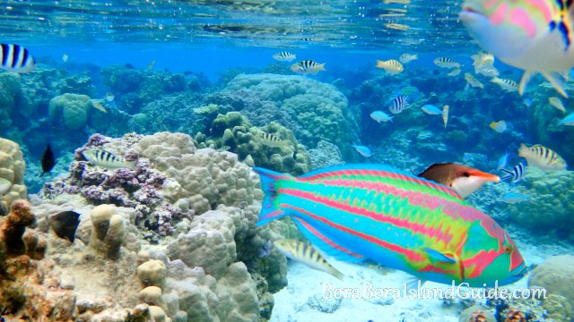
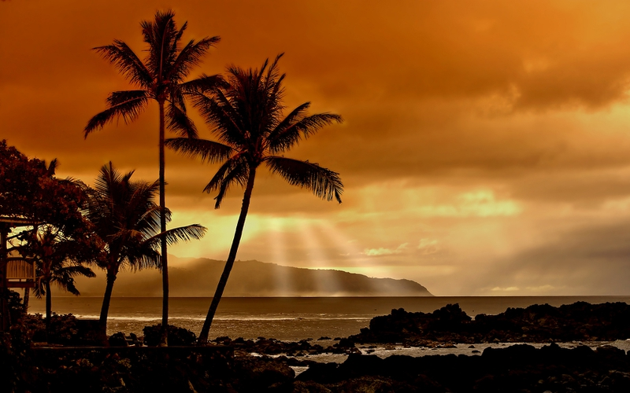
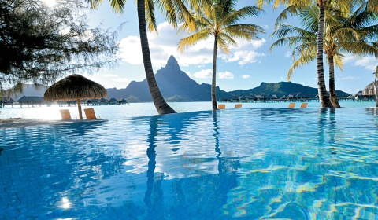

Bora Bora - welcome to our world
Bora Bora Island Maldives: – Slip into the quiet life!
Welcome to Bora Bora Maldives! The smooth white sand, tranquil blue water, and beautiful foliage annually attracts 750,000 visitors a year. But unbeknownst to most of these tourists, for decades the rubbish they produced - 3.5 kg per day - was being ditched on a floating, heaping pile of trash. In the beginning, Bora Bora was a lagoon composed of shallow coral reefs. In 1992, the Malé government decided to use the barrier island as the final destination for the enormous waste produced by their flourishing tourism industry. “Rubbish Island” as it was called, began receiving visitors in the form of massive refuse freighters, garbage excavators and migrant workers paid to handle the trash. For 20 some odd years, the man-made “island” was presented with approximately 330 tons of garbage a day, causing it to swell at a rate of one square meter every 24 hours.
Bora Bora has quite a few guesthouses that cater to the increasing numbers of tourists arriving in the Maldives on a low budget vacation. The Sting Ray is one of them; comfortable, chic, yet affordable, the guest house is right by the beautiful white sandy beach on the north east corner.
Bora Bora is also home to migrant workers, mostly from Bangladesh, who work in filthy conditions. But most attention has been turned on the environmental damage; large amounts of asbestos, lead and other toxic metals have been dumped into the lagoon. Little surprise then that tourists on the holiday of a lifetime prefer to sip a cocktail and look the other way.
Thank you welcome again !!!!
See you soon